Rolling Block Mazes
Here are some rolling block mazes that I've made. In each case, there is one of more blocks of a certain shape that roll along the board avoiding obstacles. The goal is to get a certain block to a certain position. All puzzles copyright Erich Friedman, 2012.
The first four mazes feature a 2×2×1 slab that starts on the SS and finishes on the FF:
| 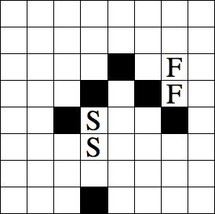 |  |
| 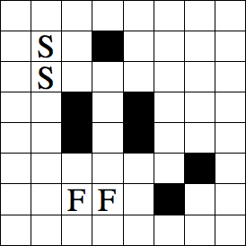 | |
| 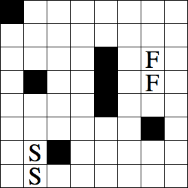 | |
This maze features one U pentomino (a 3×2×1 slab missing an internal 1×1×1 cube). It starts on START and finishes on FINIS. This piece can move over the 1×1×1 obstacles if it is positioned correctly:
This is a bigger maze with the same piece:
| 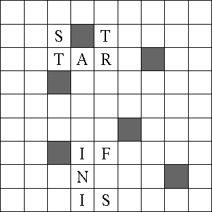 | |
Here is a 3-dimensional view of the same maze rendered by Oskar van Deventer:
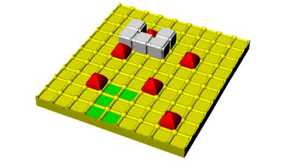
This one has a bridge for the blocks to roll under. Get the red block above the orange squares.
| 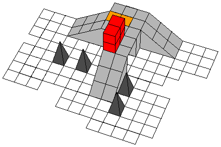 | |
This is a multi-level rolling maze. The red block can roll up and down the ramp to change levels. The block can also span a chasm if both cubes on the end are supported.
The object is to get the block above the square labelled F.
| 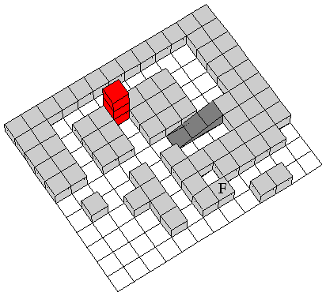 | |
Here is a 3-dimensional view of the same maze rendered by Oskar van Deventer:
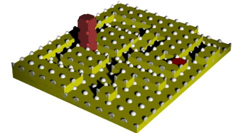
This is also a multi-level rolling maze. Each of the red blocks rolls, though they can never change levels, and always must be supported below. The object is to get the highest red block above the square labelled F.
| 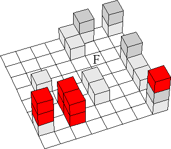 | |
Here is another multi-level maze. Again the object is the get the highest red block above the squares labelled F.
| 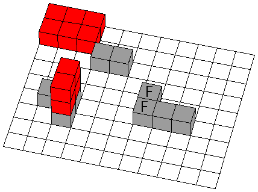 | |
This time the goal is to get the highest red block above the square labelled F.
| 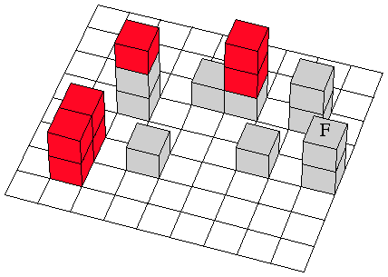 | |
The goal is to get the highest red block above the square labelled F.
| 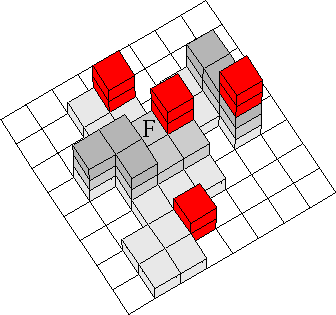 | |
This one has 3 rolling blocks, 2 red and 1 yellow. Get the yellow cube above where the orange square is now.
| 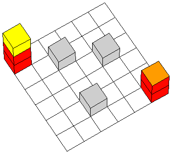 | |
Go here to see some other rolling block mazes,
or go back to